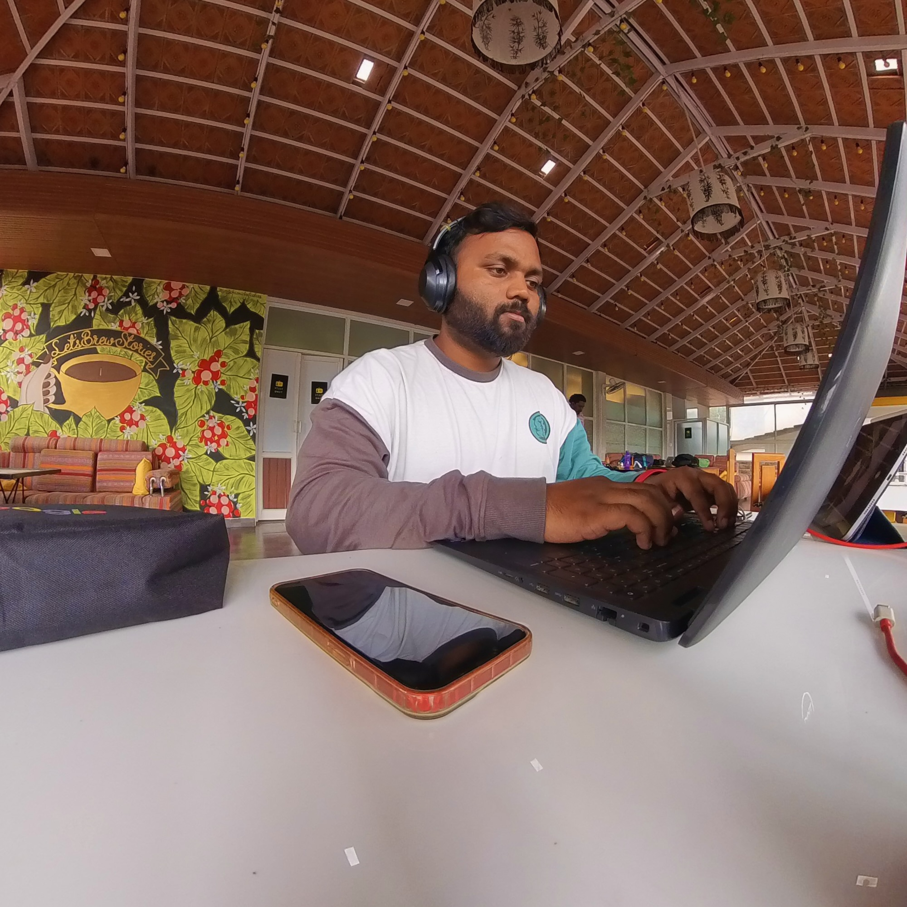

Developer
Mobile apps, useful tools, and experiments in motion. Explore my existing project archive.
Explore GitHub ↗Hey, I’m Ashutosh.
Developer, dancer, creative.
Currently exploring what to build next.
↑↓ navigate · ↵ open · esc back
A few pieces of my world.
Pick a direction and take a look.
Mobile apps, useful tools, and experiments in motion. Explore my existing project archive.
Explore GitHub ↗Movement is another way I make things. A space for dance, creative experiments, and life beyond the editor.
Find me on Instagram ↗I’m exploring what it takes to build a startup of my own. This chapter is still taking shape.
Exchange an idea ↗
Developer, dancer, and creative. Curious about software, movement, and where an idea might lead.
Say hello ↗